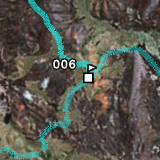

Some pictures and notes from a one-week trip to Rwanda.


November 17
Flight to Kigali with Brussels Airlines. Shared a room at the very comfortable Serena Hotel. Flights and hotels seemed to be booked out – there appeared to be a big event going on.
November 18
Drive to Akagera National Park (under 3 hours). Surprised by good condition of roads. Staying at the lodge inside the park. Got to see some animals during a short afternoon drive around the park.
November 19
Drive around the park all day. Got to see giraffes, zebras, hippos, water buffaloes, wild pigs, baboons, various antelopes, and lots of birds. Finding the animals doesn’t seem to be difficult even though there aren’t any large concentrations of animals. Great views and varied vegetation while driving up and down the hills in the park. Enjoyed trying to not fall off the roof of the Land Rover.
November 20
Back to Kigali. Stopover at the Genocide Memorial Center and the Hotel des Mille Collines (famous from the movie Hotel Rwanda). On to Volcanoes National Park (also under 3 hours from Kigali). Staying at the conveniently located Gorilla’s Nest lodge.
November 21
First gorilla visit, to the “Sabyinyo” group. November (beginning of the rain season) appears to be a convenient time for such visits as the gorillas come down to eat the bamboo that is growing at the foots of the volcanoes. Still ended up walking for about 2 hours (though at a slow pace). The gorillas are followed by trackers who radio the guide the current location of the gorillas. In addition to a guide, each group (maximum 8 people) is accompanied by 3 soldiers (following an incident with poachers a few years ago) and a porter for each person. Once contact is made with the gorillas visiting time is limited to 1 hour. I’m surprised how close we get – and how little the gorillas seem to care about us.
November 22
Hiked up to the lake in the Bisoke volcano crater. The hike starts at about 2’600m and goes up to 3’600m quickly. Rubber boots are a must for this hike, I’m glad I could borrow some. Got a guide plus the full complement of three soldiers, despite being the only person to be doing this hike. Once on top, the view was clouded… Back down, got to peek into the gorilla orphanage that is run by the Mountain Gorilla Veterinary Project. Spoke with Lucy Spelman, the local person in charge of the project. Check out her blog!
November 23
Second gorilla visit, the “Group 13”. Again walked for about 2 hours before reaching the gorillas. This group was a lot more active than the first group (see pictures and movies)!
November 24
Back to Kigali. Buy some coffee and tea before catching an overnight flight back home.
Thanks…
…to Ged from Terra Incognita Ecotours for organizing this trip.
…to the weather, for holding back the rain until near the end.
…to the mosquitoes, for staying away.